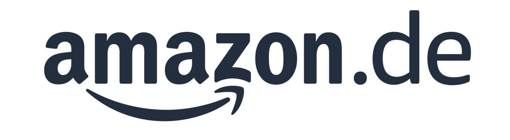

Experiences
Yard Team Lead
Working Student
Amazon DTM8, Krefeld │ December 2019 - April 2021
• Led a team of 20 and achieved at least 90% productivity by handling and processing daily production volume.
• Created a communication bridge between higher management and internal, and external teams.
• Prepared daily yard audit reports.
Research Assistant
University Research Centre, Shahjalal University of Science & Technology
• Led 4 data collection activities in adverse social and environmental conditions and conducted managerial tasks with high-profile government stakeholders.
• Performed data analysis and visualizations with medium to large data sets using Excel functions (VLOOKUP, Pivot tables) & SPSS in multiple research projects.
• Prepared documentation and research reports.
Market Researcher
September 2018 - March 2019 │ Freelance
• Analyzed market trends and product values for 3 start-up companies and prepared detailed reports.
• Actively contributed to corporate development projects by identifying strategic growth opportunities and conducting competitor intelligence analysis.
• Presentations for the stakeholders to support data-driven decision-making.